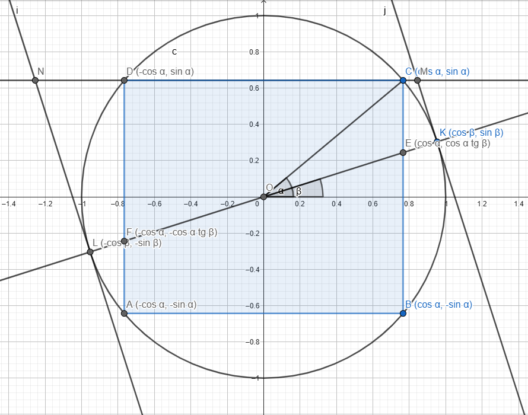
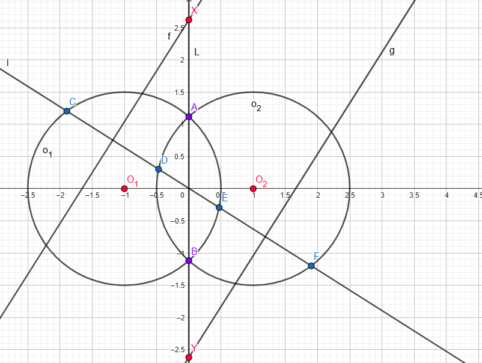

Zadanie 1.
Z założenia wynika, że \(a \neq 0\), bo funkcja liniowa nie jest funkcją kwadratową. Wiemy też, że \[b^2 - 4ac \lt 0\]\[b^2 \lt 4ac\]\[-2\sqrt{ac} \lt b \lt 2\sqrt{ac}\]\[-2\sqrt{ac} \lt -b \lt 2\sqrt{ac}\] Rozpatrzmy dwa przypadki:
Przypadek 2: \(a\lt0 \implies c \lt 0 \implies ac \gt 0\) Niech \(A = -a\) oraz \(C = -c\). Widać, że \(A \gt 0\), \(C \gt 0\) i \(AC = ac\). \(a(2a+3b+6c) = -A(2(-A)+3b+6(-C)) = A(2A-3b+6C)\) \(\gt A(2A-6\sqrt{AC}+6C)\) a dalej postępować jak w przypadku 1.
\(\Box\)
Zadanie 2.
Przedstawmy zadanie w kartezjańskim układzie współrzędnych takim, że okrąg \(\omega\) ma promień \(1\), a boki prostokąta \(ABCD\) są równoległe do osi (\(AB\) i \(CD\) równoległe do osi \(OX\) a \(AD\) i \(BC\) do osi \(OY\)). Oznaczymy przez \(\alpha\) kąt między \(OC\) a osią \(OX\), a przez \(\beta\) kąt między prostą \(l\) a osią \(OX\). Widać, że \(0<\beta<\alpha<\frac{\pi}{2}\).

Zauważmy, że: \[A = (-\cos\alpha,-\sin\alpha)\]\[B = (\cos\alpha,-\sin\alpha)\]\[C = (\cos\alpha,\sin\alpha)\]\[D = (-\cos\alpha,\sin\alpha)\]\[K = (\cos\beta,\sin\beta)\]\[L = (-\cos\beta,-\sin\beta)\]
Widać też, że punkty \(E\) i \(F\) oba leżą na prostej o równaniu \(y = \tan(\beta)x\) i mają współrzędną \(x\) odpowiednio \(\cos\alpha\) i \(-\cos\alpha\), więc \[E = (\cos\alpha , \cos\alpha \tan\beta)\]\[F = (-\cos\alpha,-\cos\alpha \tan\beta)\] Proste \(KM\) i \(LN\) są prostopadłe do \(y = \tan(\beta)x\), czyli ich współczynnik kierunkowy wynosi \(-\cot\beta\).\[KM : y = -\cot(\beta)(x-\cos\beta) + \sin\beta\]\[KM : y = -\cot(\beta)x + \frac{\cos^2\beta}{\sin\beta} + \sin\beta\]\[KM:y = -\cot(\beta)x + \frac{1}{\sin\beta}(\sin^2\beta+\cos^2\beta)\]\[KM : y = -\cot(\beta)x + \frac{1}{\sin\beta}\]\[\text{(Podobnie: }LN : y = -\cot(\beta)x - \frac{1}{\sin\beta}\text{)}\] Zarówno punkt \(M\) jak i punkt \(N\) należą do prostej \(CD\), która jest pozioma, czyli jest wykresem funkcji stałej, a konkretnie \(y = \sin\alpha\). \[\sin\alpha = -\cot(\beta)x_M + \frac{1}{\sin\beta}\]\[\cos(\beta)x_M = -\sin(\alpha)\sin(\beta)+1\]\[x_M = -\sin(\alpha)\tan(\beta) + \frac{1}{\cos\beta}\]\[\text{(Podobnie: } x_N = -\sin(\alpha)\tan(\beta) - \frac{1}{\cos\beta}\text{)}\]\[M = (-\sin(\alpha)\tan(\beta) + \frac{1}{\cos\beta};\sin\alpha)\]\[N = (-\sin(\alpha)\tan(\beta) - \frac{1}{\cos\beta};\sin\alpha)\]
W każdym okręgu, jego środek leży na symetralnej dowolnej cięciwy. Zakładając, że okrąg przechodzący przez punkty \(E,F,M,N\) istnieje, wiemy, że jego środkiem będzie punkt przecięcia się symetralnej cięciwy \(EF\) i cięciwy \(MN\). Środkiem odcinka \(EF\) jest punkt \((0,0)\), więc symetralną jest wykres \(y = -\cot(\beta)x\). Cięciwa \(MN\) jest pozioma, a współrzędną \(x\) jej środka jest \(-\sin(\alpha)\tan(\beta)\). Wiemy zatem, że środek okręgu to punkt \[O_1 = (-\sin(\alpha)\tan(\beta);\sin\alpha)\] gdyż \((-\cot\beta)(-\sin(\alpha)\tan(\beta))=\sin\alpha\). Widzimy, że punkty \(M,O_1,N\) są współliniowe i leżą na poziomej prostej \(y=\sin\alpha\), więc \(MN\) jest średnicą tego okręgu. Ponadto łatwo jest obliczyć długość promienia okręgu, bo możemy obliczyć długość \(O_1M\) lub \(O_1N\). Ponieważ leżą na wspólnej poziomej prostej, wystarczy odjąć pierwsze współrzędne i wziąć wartość bezwzględną. Wychodzi wtedy \(r = \frac{1}{\cos\beta}\).\[\omega_1 : (x+\sin(\alpha)\tan(\beta))^2 + (y-\sin\alpha)^2 = \frac{1}{\cos^2\beta}\] Mamy zagwarantowane, że \(M\) i \(N\) leżą na okręgu. Należy sprawdzić punkty \(E\) i \(F\). Zrobię to w jednej linijce z pomocą znaków \(\pm\) i \(\mp\).
\[(\pm \cos\alpha,\pm \cos(\alpha)\tan(\beta)) \in \omega_1\]
\[\iff (\pm \cos\alpha + \sin(\alpha)\tan(\beta))^2 + (\pm \cos(\alpha)\tan(\beta) - \sin\alpha)^2 = \frac{1}{\cos^2\beta}\]\[\iff (\sin(\alpha)\sin(\beta) \pm \cos(\alpha)\cos(\beta))^2 + (\sin(\alpha)\cos(\beta) \mp \cos(\alpha)\sin(\beta))^2 = 1\]\[\iff (\cos(\alpha \mp \beta))^2 + (\sin(\alpha \mp \beta))^2 = 1\]\[\therefore \bigvee_{\omega_1} E,F,M,N \in \omega_1\] \(\Box\) Zadanie 3.
Uogólnijmy rozważając to zadanie dla \(n\) będącego iloczynem \(m\) parami różnych liczb pierwszych.
Udowodnimy indukcją na \(m\), że dla wszystkich \(m\) naturalnych warunki zadania są spełnione dla \(2^m\) liczb \(k\).
Dla \(m = 1\) mamy \(n = p_1\).\[n+\text{NWD}(n,k)=k\]\[p_1 + \text{NWD}(p_1,k) = k\] Rozważmy dwa przypadki: Przypadek 1: \(p_1 \mid k\) W takim wypadku \(k = p_1 + \text{NWD}(p_1,k) = p_1 + p_1 = 2p_1 = 2n\). Jest jedno takie \(k\). Przypadek 2: \(p_1 \nmid k\) Wtedy \(k = p_1 + \text{NWD}(p_1,k) = p_1 + 1 = n+1\). Jest jedno takie \(k\).
W sumie takich \(k\) dla \(m=1\) jest \(2 = 2^1 = 2^m\).
Przejdźmy do hipotezy indukcyjnej. Załóżmy, że dla jakiegoś \(n\) jest \(2^m\) takich \(k\), że \(n + \text{NWD}(n,k) = k\). Rozważmy liczbę \(p_0n\), gdzie \(p_0\) jest liczbą pierwszą i \(p_0 \nmid n\) w dwóch przypadkach: Przypadek 1: \(p_0 \mid k\) \[p_0n+\text{NWD}(p_0n,k) = k\]\[\iff p_0n+p_0\text{NWD}(n,\frac{k}{p_0}) = k\]\[\iff n + \text{NWD}(n,\frac{k}{p_0}) = \frac{k}{p_0} \in \mathbb{Z} \text{ (bo } p_0 \mid k \text{)}\] Jest \(2^m\) takich \(\frac{k}{p_0}\), a ponieważ \(p_0\) bierzemy jako stałe, to jest \(2^m\) takich \(k\). Przypadek 2: \(p_0 \nmid k\) \[p_0n+\text{NWD}(p_0n,k)=k\]\[\iff p_0n + \text{NWD}(n,k) = k\]\[\iff p_0n + \text{NWD}(n,k-(p_0-1)n) = k\]\[\iff n + \text{NWD}(n,k-(p_0-1)n) = k - (p_0-1)n\] Mamy zatem z hipotezy indukcyjnej, że jest \(2^m\) takich \(k-(p_0-1)n\), ale ponieważ traktujemy \(n\) i \(p_0\) jako stałe, oznacza to, że jest \(2^m\) takich \(k\).
Sumując z obu przypadków dostajemy, że jest \(2^{m+1}\) takich liczb \(k\) dla \(p_0n\), co kończy dowód indukcyjny. Podstawiając \(m=2024\) otrzymujemy, że dla \(n\) będącego iloczynem 2024 parami różnych liczb pierwszych mamy \(2^{2024}\) takich liczb \(k\), że \(n + \text{NWD}(n,k) = k\).
\(\Box\) Zadanie 4.
\[A := \{a_1,\ldots,a_n\}\]\[B := \{a_1+a_2,\ldots,a_{n-1}+a_n,a_n+a_1\}\] Dla \(n=2\) mamy \(a_1 = k\) dla jakiegoś \(k \in \mathbb{Z}\). Żeby zbiór \(A\) miał dwie kolejne liczby całkowite, to \(a_2 = k \pm 1\). Wtedy drugi zbiór ma postać \(\{2k \pm 1\}\), czyli ma jeden element. Zadanie nas prosi, żeby w tym zbiorze było \(n\) liczb, a \(n = 2 \neq 1\). Dla \(n \ge 3\) oba zbiory mają tę samą moc, równą \(n\). Oba zbiory modulo \(n\) muszą zawierać wszystkie elementy \(\mathbb{Z}_n\), ponieważ oba mają moc \(n\) i zawierają kolejne liczby całkowite. (*) Dowód: Załóżmy, że zbiór \(S\) to zbiór \(n\) kolejnych liczb całkowitych. Niech \(x\) będzie najmniejszą z nich. Dla \(x=0\), zbiór \(S\) jest dokładnie równy \(\mathbb{Z}_n\). Zakładając prawdziwość dla \(x = l\) (czyli że elementy zbioru \(S = \{l,l+1,\ldots,l+n-1\}\) odpowiadają elementom \(\mathbb{Z}_n\)), widzimy, że dla \(x = l+1\) mamy \(S = \{l+1,l+2,\ldots,l+n\}\). Ponieważ \(l+n \equiv l \pmod{n}\), udowodniliśmy tezę dla nieujemnych \(x\). Dla ujemnych \(x\) indukcję należy wykonać w drugą stronę. Z takim samym założeniem rozważmy \(x = l-1\). Wtedy zbiór \(S = \{l-1,l,\ldots,l+n-2\}\). Ponieważ \(l-1 \equiv l+n-1 \pmod{n}\), udowodniliśmy twierdzenie.
Lemat: Dla parzystych \(n := 2m\), dla kolejnych \(n\) liczb całkowitych \(b_i\) w dowolnej kolejności, \[\sum_{i=1}^{2m} b_i \equiv m \pmod{2m}\] Dowód: \[b_i = nq_i+r_i \text{ (}q_i \in \mathbb{Z}, 0 \le r_i \lt n \text{) } \implies b_i \equiv r_i \pmod{n}\] Ponieważ (*), to zbiór wszystkich \(r_i\) jest równy \(\mathbb{Z}_n\). Suma elementów \(\mathbb{Z}_n\) jest równa \(\frac{n(n+1)}{2}\) (liczby trójkątne). Gdy \(n\) jest parzyste (\(n=2m\)), to ta suma wynosi \[ \frac{2m(2m+1)}{2} = m(2m+1) \equiv m(1) = m \pmod{2m}\] \(\Box\) Ale zauważmy, że dla parzystego \(n\), w zbiorze \(B\), jeżeli weźmiemy sumę elementów, to ta suma będzie dwukrotnie większa od sumy elementów zbioru \(A\), ponieważ każdy element \(a_i\) pojawia się w tej drugiej sumie (ze zbioru \(B\)) dwukrotnie, a w pierwszej (ze zbioru \(A\)) jednokrotnie. Zatem suma elementów zbioru \(B\) dla \(n = 2m\) to \(2 \cdot m \equiv 0 \pmod{2m}\), a przez kontrapozycję lematu możemy wywnioskować, że zbiór \(B\) nie ma parzystej liczby kolejnych liczb całkowitych, a w szczególności nie ma ich \(2m\) czyli \(n\). Prowadzi nas to do sprzeczności, czyli \(n\) musi być nieparzyste.
Dla \(n = 2m+1\) skonstruujmy ciąg: \[\begin{cases}a_{2i+1} = -i & 0 \le i \le m \\ a_{2i+2} = m-i & 0 \le i \lt m \end{cases}\] Dla indeksów nieparzystych ciąg ten osiągnie wartości \(\{-m,-(m-1),\ldots,-1,0\}\), natomiast dla parzystych indeksów będzie to \(\{m,m-1,\ldots,1\}\), czyli razem kolejne liczby całkowite od \(-m\) do \(m\) w zbiorze \(A\). Rozważmy sumę kolejnych elementów (elementy zbioru \(B\)).\[a_{2i+1} + a_{2i+2} = m-2i \text{ skąd wartościami są } \{m,m-2,m-4,\ldots,-(m-2)\}\]\[a_{2i} + a_{2i+1} = (m-i+1)-i = m - 2i + 1 \text{ skąd wartościami są } \{m-1,m-3,\ldots,-(m-1)\}\]\[a_{2m+1}+a_1 = -m + 0 = -m\] Widzimy, że otrzymaliśmy kolejne \(2m+1\) liczb całkowitych, od \(-m\) do \(m\) w zbiorze \(B\), więc taki ciąg liczb całkowitych, o jaki pytają w zadaniu istnieje wyłącznie dla wszystkich nieparzystych \(n \ge 3\).
Zadanie 5. Przypadek 1.: \(b = 1\) \[a^n + 1 \mid a(a+1)^{n-1}\] Zauważmy, że \[\text{NWD} \left ( a^n + 1 , a \right ) = \text{NWD} \left ( a^n + 1 - a^n , a \right ) = \text{NWD} \left ( 1 , a \right ) = 1\] Zatem musi być, że \[a^n + 1 \mid (a+1)^{n-1}\] Weźmy dowolną liczbę pierwszą \(p \mid a+1\). \(p \neq 2\) ponieważ \(2 \mid a\), a \(\text{NWD}(a,a+1) = 1\). \[a+1 \equiv 0 \pmod{p}\] \[a \equiv -1 \pmod{p}\] \[2 \mid n \implies a^n \equiv (-1)^n \equiv 1 \pmod{p}\] \[a^n + 1 \equiv 2 \not\equiv 0 \pmod{p}\] \[p \nmid a^n+1\] Więc nie ma takiej liczby pierwszej, która dzieli zarówno \(a^n+1\) jak i \(a(a+1)^{n-1}\), czyli \(a^n+1\) musi być równe \(1\), a to zachodzi jedynie dla \(a = 0\), a z treści zadania wynika, że \(a \gt 0\). Zatem dla \(b=1\) założenie twierdzenia z treści zadania nie jest nigdy spełnione, więc implikacja jest prawdziwa.
Przypadek 2.: \(\text{NWD}(a,b) = 1 \land b > 1\) Weźmy dowolną liczbę pierwszą \(p \mid b\), co jest możliwe, bo \(b > 1\). Ponieważ \(a\) i \(b\) są względnie pierwsze, \[p \nmid a\] \[p \nmid a^n\] \[p \nmid a^n + b^n\] ponieważ \(p \mid b\).
Zatem nie ma liczb pierwszych \(p\) dzielących \(b\), dla których \(p \mid a^n+b^n\), więc nie ma co wśród nich szukać liczb, które w ogóle do \((n+1)\)-tej potęgi będą dzielić \(a^n+b^n\). Poszukajmy więc liczb pierwszych \(p \nmid b\). Jeżeli \(p \mid a\), to na podobnej zasadzie nam nie podzieli \(a^n + b^n\). \[p \mid a \land p \nmid b\] \[p \nmid a^n + b^n \] \(p\) musi zatem nie dzielić ani \(a\), ani \(b\). Załóżmy, że jest taka liczba pierwsza \(p \mid a^n + b^n\) \[\implies ( p \mid a) \lor (p \mid b) \lor \left ( p \mid (a+b)^{n-1} \right )\] \[ p \nmid b \land p \nmid a \implies p \mid a+b\] \[a \equiv -b \pmod{p}\] \[2 \mid n \implies a^n \equiv (-b)^n = (-1)^n b^n = b^n \pmod{p}\] \[a^n + b^n \equiv 2b^n \pmod{p}\] \[0 \equiv 2b^n \pmod{p}\] \[b \equiv 0 \pmod{p}\] \[p \mid b\] co jest sprzecznością. Zatem nie ma takiej liczby pierwszej, która dzieli \(a^n+b^n\), mając podane założenia z zadania, więc \(a^n+b^n = 1\), co jest niemożliwe, ponieważ \(a \ge 2\) i \(b \ge 1\). Więc w tym przypadku założenie twierdzenia do udowodnienia również nigdy nie jest spełnione, więc jak i w pierwszym przypadku implikacja jest prawdziwa.
Przypadek 3.: \(\text{NWD}(a,b) = d \gt 1\) \[a = da_0\] \[b = db_0\] \[\text{NWD}(a_0,b_0) = 1\] \[ab(a+b)^{n-1} = d^{n+1}a_0b_0(a_0+b_0)^{n-1}\] \[a^n + b^n = d^n \left ( a_0^n + b_0^n \right )\] Weźmy dowolną liczbę pierwszą \(p \mid d\). \[p^{n+1} \mid a^n + b^n\] \[\iff p^{n+1} \mid p^n (d/p)^n \left ( a_0^n + b_0^n \right ) \] \[\iff p \mid \left ( a_0^n + b_0^n \right ) \lor p \mid (d/p)\] \[\iff p \mid \left ( a_0^n + b_0^n \right ) \lor p^2 \mid d\] Jeżeli znajdziemy taką liczbę pierwszą \(p \mid d\), to voilà. Natomiast jeśli nie, to musimy znaleźć inną liczbę pierwszą \(p_0 \nmid d\), taką, że \[p_0 \mid a^n + b^n \mid ab(a+b)^{n-1}\] \[p_0 \mid d^n \left ( a_0^n + b_0^n \right ) \mid d^{n+1} a_0b_0(a_0+b_0)^{n-1}\] \[p_0 \mid a_0^n + b_0^n \mid d a_0b_0(a_0+b_0)^{n-1}\] Na podstawie przypadków 1 i 2, nie ma takiej liczby pierwszej, chyba że \(\text{NWD}(d , a_0^n + b_0^n) \gt 1\). Jednak założyliśmy, że nie ma takiej liczby \(p \mid d\), która dzieli \(a_0^n + b_0^n\), więc \(\text{NWD}(d,a_0^n+b_0^n) = 1\). Możemy więc stwierdzić, że nie ma takiej liczby pierwszej \(p_0 \nmid d\), która dzieli \(a_0^n + b_0^n \), czyli nie ma w ogóle liczby pierwszej, która dzieli \(a_0^n + b_0^n \), czyli \(a_0^n + b_0^n = 1\), co jest niemożliwe, ponieważ \(a \ge 2\) i \(b \ge 1\).
Summa summarum, albo jest taka liczba \(p\), której \((n+1)\)-ta potęga dzieli \(a^n + b^n\) z założeniami z treści zadania, albo założenie nie jest spełnione, czyli tak czy siak implikacja jest prawdziwa. \(\Box\)
Zadanie 6. Zadanie 7. Osadźmy to zadanie w układzie współrzędnych. Niech oś \(Y\) leży na prostej przechodzącej przez \(A\) i \(B\), a oś \(X\) niech przechodzi przez środki okręgów, jak na rysunku. Odległość środków okręgów niech wynosi \(2\) jednostki w tym układzie współrzędnych.  Przez \(O\) nazwijmy początek układu współrzędnych. Zauważmy, że punkty \(X,A,O,B,Y\) leżą na jednej prostej, oraz \(|OA| = |OB|\). Teza jest zatem równoważna stwierdzeniu, że \(|OX| = |OY|\). Równaniami okręgów są: \[o_1 : (x+1)^2 + y^2 = r^2 \] \[o_2 : (x-1)^2 + y^2 = r^2 \] Niech prostą przechodzącą przez \(C,D,E,F\) będzie prosta \(l: y = ax+b\). Punkty \(C\) oraz \(E\) leżą na okręgu \(o_1\). Niech ich współrzędne \(x\) będą odpowiednio \(x_C\) i \(x_E\). \[ (x_{CE} + 1)^2 + (ax_{CE}+b)^2 = r^2\] \[ (x_{DF} - 1)^2 + (ax_{DF}+b)^2 = r^2\] \[\left ( 1+a^2 \right ) x_{CE}^2 + 2(ab + 1)x_{CE} + 1 + b^2 - r^2 = 0\] \[\left ( 1+a^2 \right ) x_{DF}^2 + 2(ab - 1)x_{DF} + 1 + b^2 - r^2 = 0\] Niech \[w = \frac{1+b^2-r^2}{1+a^2}\] \[T_+ = \frac{ab+1}{1+a^2}\] \[T_- = \frac{ab-1}{1+a^2}\] \[W_+ = \sqrt{T_+^2 - w}\] \[W_- = \sqrt{T_-^2 - w}\] Wtedy: \[x_C = -T_+ - W_+\] \[x_D = -T_- - W_-\] \[x_E = -T_+ + W_+\] \[x_F = -T_- + W_-\] Symetralne odcinków to są proste prostopadłe do tych odcinków przechodzące przez ich środki. Niech \(S_{CD} = (X_{CD} , Y_{CD})\) i \(S_{EF} = ( X_{EF} , Y_{EF} )\) będą odpowiednio środkami odcinków \(CD\) i \(EF\). \[X_{CD} = - \frac{1}{2} ( (T_+ + T_-) + (W_+ + W_-) )\] \[X_{EF} = - \frac{1}{2} ( (T_+ + T_-) - (W_+ + W_-) )\] \[s_{CD} : y = -\frac{1}{a} (x - X_{CD}) + (aX_{CD} + b)\] \[s_{EF} : y = -\frac{1}{a} (x - X_{EF}) + (aX_{EF} + b)\] \[s_{CD} : y = -\frac{1}{2a} (2x + (T_+ + T_-) + (W_+ + W_-)) - \frac{a}{2}((T_+ + T_-) + (W_+ + W_-)) + b\] \[s_{EF} : y = -\frac{1}{2a} (2x + (T_+ + T_-) - (W_+ + W_-)) - \frac{a}{2}((T_+ + T_-) - (W_+ + W_-)) + b\] \[s_{CD}(0) = -\left ( \frac{1}{2a} + \frac{a}{2} \right ) \left ( (T_+ + T_-) + (W_+ + W_-) \right ) + b\] \[s_{EF}(0) = -\left ( \frac{1}{2a} + \frac{a}{2} \right ) \left ( (T_+ + T_-) - (W_+ + W_-) \right ) + b\] Zauważmy, że \(X = (0,s_{CD}(0))\) oraz \(Y = (0,s_{EF}(0))\). \[s_{CD}(0) + s_{EF}(0) = - \frac{1+a^2}{2a} \cdot 2 (T_+ + T_-) + 2b\] \[ = -\frac{1+a^2}{a} \cdot \frac{2ab}{1+a^2} + 2b = -2b + 2b = 0\] \[\therefore s_{CD}(0) = - s_{EF}(0)\] \[\therefore |OX| = |OY|\] \[\therefore |AX| = |BY|\] \(\Box\)
Zadanie 8. Zadanie 9. Zadanie 10. Zadanie 11. Oznaczmy przez \(m_p\) funkcję: \[m_p(x_1,x_2,\ldots,x_n) = \left ( \frac{x_1^p + x_2^p + \cdots + x_n^p}{n} \right ) ^\frac{1}{p}\] Lemat 1: Dla argumentów \(x_i \gt 0\), \( p < q \implies m_p(\vec{x}) \le m_q(\vec{x})\) Dowód: Niech \(f(t) = m_t(x_1,x_2,\ldots,x_n)\) i WLOG niech \(x_1 \ge x_2 \ge \cdots \ge x_n \gt 0\). Wtedy: \[f(t) = \left ( \frac{x_1^t + x_2^t + \cdots + x_n^t}{n} \right)^\frac{1}{t}\] \[f(t) = x_1 \left ( \frac{1 + \left ( \frac{x_2}{x_1}\right)^t + \cdots + \left ( \frac{x_n}{x_1}\right)^t}{n} \right)^\frac{1}{t}\] Funkcja \(f\) jest niemalejąca wtedy i tylko wtedy, gdy również niemalejąca jest funkcja \(g(t) = \left ( \frac{1}{n}\sum_{i=1}^n c_i^t \right )^\frac{1}{t}\), gdzie \(c_i \in (0,1 \rangle \) \[g(t) = \left ( \frac{1}{n}\sum_{i=1}^n c_i^t \right )^\frac{1}{t} \] \[g'(t) = \left ( \frac{1}{n}\sum_{i=1}^n c_i^t \right )^\frac{1}{t} \cdot \ln \left ( \frac{1}{n}\sum_{i=1}^n c_i^t \right ) \cdot \frac{1}{n} \sum_{i=1}^{n} c_i^t \ln(c_i) \] Widzimy, że argument pierwszego logarytmu jest średnią liczb między 0 a 1, więc logarytm jest niedodatni. Podobnie z każdym logarytmem w sumie. Pozostałe elementy są dodatnie, więc ten iloczyn jest nieujemny. \[g'(t) \ge 0 \implies g(t) \text{ rosnąca} \implies f(t) \text{ rosnąca}\] \(\Box\) Niech \(P_i\) będzie ciągiem macierzy zdefiniowanych jako: \[ \begin{cases} P_1 = \begin{bmatrix} 1 & 1 \\ 1 & -1 \end{bmatrix} \\ P_{i+1} = \begin{bmatrix} P_i & P_i \\ P_i & -P_i \end{bmatrix} \end{cases} \] Lemat 2: \(P_i^2 = 2^{i} I ( \iff P_i^{-1} = 2^{-i} P_i )\) Udowodnijmy indukcją. Dla \(i = 1\) mamy: \[P_1^2 = \begin{bmatrix} 1 & 1 \\ 1 & -1 \end{bmatrix} \begin{bmatrix} 1 & 1 \\ 1 & -1 \end{bmatrix} = \begin{bmatrix} 2 & 0 \\ 0 & 2 \end{bmatrix} = 2 I \] Załóżmy, że \(P_i^2 = 2^i I\). Wtedy: \[P_{i+1}^2 = \begin{bmatrix} P_i & P_i \\ P_i & -P_i \end{bmatrix} \begin{bmatrix} P_i & P_i \\ P_i & -P_i \end{bmatrix} = \begin{bmatrix} 2 P_i^2 & 0 \\ 0 & 2 P_i^2 \end{bmatrix} = \begin{bmatrix} 2^{i+1} I & 0 \\ 0 & 2^{i+1} I \end{bmatrix} = 2^{i+1} I\] \(\Box\) Możemy więc korzystać z tego, że \(P_i^{-1} = 2^{-i} P_i\).
Zauważmy, że suma, przez którą zdefiniowane jest \(c_n\) przypomina wzór: \[ (x_1 + x_2 + x_3 + \cdots + x_l)^n = \sum_{k_1+k_2+\cdots+k_l = n} \frac{n!}{k_1!k_2!\cdots k_l!} x_1^{k_1} x_2^{k_2} \cdots x_l^{k_l}\] A dokładniej jest to \( \left ( \sqrt{a_1} + \sqrt{a_2} + \cdots + \sqrt{a_l} \right ) ^{2n}\), kiedy suma przechodzi wyłącznie po tych przypadkach, gdzie wszystkie wykładniki są parzyste. Inspirując się liczbami zespolonymi czy też innymi tego typu kreacjami ludzkiego umysłu możnaby stworzyć własny taki rodzaj liczb, w którym suma ta przechodzi po wszystkich potęgach (a nie tylko parzystych), lecz tylko kiedy wszystkie potęgi są parzyste, składnik tej sumy jest rzeczywisty. Niech \(a + b_1 \ \omega_1 + b_2 \ \omega_2 + b_{1,2} \ \omega_1 \omega_2 + b_3 \ \omega_3 + \cdots + b_{1,2,\ldots,l} \ \omega_1 \omega_2 \cdots \omega_l\) będą tym zbiorem liczb, przy czym \( \omega_i^2 = 1\). Ten twór nazwijmy \(l\)-omegaliczbami. Wtedy: \[(\omega_1 \sqrt{a_1} + \omega_2 \sqrt{a_2} + \cdots + \omega_l \sqrt{a_l})^{2n} = \sum_{k_1+k_2+\cdots+k_l = 2n} \frac{(2n)!}{(k_1!)(k_2!)\cdots(k_l!)} (\omega_1 \sqrt{a_1})^{k_1} (\omega_2 \sqrt{a_2})^{k_2} \cdots (\omega_l \sqrt{a_l})^{k_l}\] Widzimy, że w danym składniku nie będzie omeg wtedy i tylko wtedy, kiedy wszystkie \(k_i\) będą parzyste (bo \(\omega_i^2 = 1\)), więc rzeczywista część powyższej sumy będzie dokładnie równa \(c_n\).
Również inspirując się chociażby liczbami zespolonymi, możemy znaleźć rodzinę macierzy, która będzie zbiorem wartości dla pewnego homomorfizmu z \(l\)-omegaliczb do macierzy kwadratowych o wymiarach \(2^l \times 2^l\), tak jak liczby zespolone można przedstawić jako: \[a+bi \to \begin{bmatrix} a & -b \\ b & a \end{bmatrix}\] Konstrukcję takiej macierzy przedstawię rekursywnie. Niech \(\varphi_l\) będzie funkcją z pierścienia \(l\)-omegaliczb do macierzy kwadratowych \(2^l \times 2^l\). Definiujemy: \[\varphi_1 ( \ a + b_1 \ \omega_1 \ ) := \begin{bmatrix} a & b \\ b & a \end{bmatrix}\] Niech \(z_1\) i \(z_2\) będą \(l\)-omegaliczbami i niech \(\varphi_l (z_1) = A\) i \(\varphi_l (z_2) = B\). Wtedy: \[ \varphi_{l+1}(z_1 + z_2 \ \omega_{l+1}) := \begin{bmatrix} A & B \\ B & A \end{bmatrix} = \begin{bmatrix} \varphi_l(z_1) & \varphi_l(z_2) \\ \varphi_l(z_2) & \varphi_l(z_1) \end{bmatrix}\] Udowodnijmy, że jest to homomorfizm. Zachowanie dodawania i elementów neutralnych jest trywialne. Zachowanie mnożenia udowodnię indukcją: Dla \(l = 1\) mamy: \[\varphi_1((a+b\omega_1)(c+d\omega_1)) = \varphi_1 ( \ (ac + bd) + (ad + bc) \omega_1 \ ) \] \[= \begin{bmatrix} ac+bd & ad+bc \\ ad+bc & ac+bd \end{bmatrix} = \begin{bmatrix}a&b\\b&a\end{bmatrix} \begin{bmatrix}c & d\\d & c\end{bmatrix} = \varphi_1(a+b\omega_1) \varphi_1(c+d\omega_1)\] Załóżmy, że \(\varphi_l\) jest homomorfizmem. Niech \(y_1\), \(y_2\), \(z_1\), \(z_2\) będą \(l\)-omegaliczbami. Wtedy: \[\varphi_{l+1}(y_1 + y_2 \omega_{l+1}) \varphi_{l+1}(z_1 + z_2 \omega_{l+1}) = \begin{bmatrix} \varphi_l(y_1) & \varphi_l(y_2) \\ \varphi_l(y_2) & \varphi_l(y_1) \end{bmatrix} \begin{bmatrix} \varphi_l(z_1) & \varphi_l(z_2) \\ \varphi_l(z_2) & \varphi_l(z_1) \end{bmatrix} = \begin{bmatrix} \varphi_l(y_1 z_1 + y_2 z_2) & \varphi_l(y_1 z_2 + y_2 z_1) \\ \varphi_l(y_1 z_2 + y_2 z_1) & \varphi_l(y_1 z_1 + y_2 z_2) \end{bmatrix} \] \[= \varphi_{l+1}((y_1 z_1 + y_2 z_2) + \omega_{l+1} (y_1 z_2 + y_2 z_1)) = \varphi_{l+1}((y_1 + y_2 \omega_{l+1})(z_1 + z_2 \omega_{l+1}))\] Więc \(\varphi_l\) jest homomorfizmem z \(l\)-omegaliczb do macierzy \(2^l \times 2^l\).
\(\varphi_l\) jest injekcją. Udowodnijmy indukcją. Dla \(l=1\) załóżmy przeciwnie, czyli że istnieją \(a,b,c,d \in \mathbb{R}\), że: \[ \varphi_1(a+b\omega_1) = \varphi_1(c+d \omega_1)\] \[ \begin{bmatrix} a & b \\ b & a \end{bmatrix} = \begin{bmatrix} c & d \\ d & c \end{bmatrix} \] \[a = c \land b = d\] czyli argumenty \(\varphi_1\) muszą być równe, żeby wartości (będące macierzami) były równe. Załóżmy, że \(\varphi_l\) jest injekcją, a dla \(l+1\) istnieją \(y_1, y_2, z_1, z_2\) (\(l\)-omegaliczby), że \[\varphi_{l+1}(y_1 + y_2 \omega_{l+1}) = \varphi_{l+1}(z_1 + z_2 \omega_{l+1})\] \[\begin{bmatrix} \varphi_l(y_1) & \varphi_l(y_2) \\ \varphi_l(y_2) & \varphi_l(y_1) \end{bmatrix} = \begin{bmatrix} \varphi_l(z_1) & \varphi_l(z_2) \\ \varphi_l(z_2) & \varphi_l(z_1) \end{bmatrix}\] \[\varphi_l(y_1) = \varphi_l(z_1) \land \varphi_l(y_2) = \varphi_l(z_2) \] \[y_1 = z_1 \land y_2 = z_2\] Zatem \(\varphi_l\) jest injekcją. \(\Box\)
Warto też zauważyć, że rzeczywistą część omegaliczby możemy zobaczyć m.in. w pierwszym wierszu i pierwszej kolumnie macierzy jej odpowiadającej, czyli \[\text{Re}(z) = \begin{bmatrix} 1 & 0 & 0 & \cdots & 0 \end{bmatrix} \ \varphi_l(z) \ \begin{bmatrix} 1 \\ 0 \\ 0 \\ \vdots \\ 0 \end{bmatrix}\] Ponieważ \(\varphi_l\) jest homomorfizmem (lub izomorfizmem jeżeli ograniczymy swoją przeciwdziedzinę), wiemy, że \(\varphi_l(z^n) = (\varphi_l(z))^n\). Podnosić macierze kwadratowe do potęgi można łatwo zrobić, jeżeli zna się ich eigenwartości i eigenwektory. Niech \(p_1,p_2,p_3,\ldots,p_l \in \{-1;1\}\) będą niezależnymi od siebie nawzajem parametrami. Eigenwartościami dla \(z = a + b_1 \ \omega_1 + b_2 \ \omega_2 + b_{1,2} \omega_1 \omega_2 + b_3 \ \omega_3 + \cdots + b_{1,2,\ldots,l} \ \omega_1 \omega_2 \cdots \omega_l\) są liczby postaci: \[\lambda = a + (p_1) b_1 + (p_2) b_2 + (p_1 p_2) b_{1,2} + (p_3) b_3 + \cdots + (p_1 p_2 \cdots p_l) b_{1,2,\ldots,l}\] a ich odpowiednimi eigenwektorami są \[\vec{v} = \begin{bmatrix} 1 \\ p_1 \\ p_2 \\ p_1 p_2 \\ p_3 \\ \vdots \\ p_1 p_2 \cdots p_l \end{bmatrix}\] Dowód: Dla \(l = 1\) mamy \(\lambda = a + p_1 b_1\) i \(\vec{v} = \begin{bmatrix} 1 \\ p_1 \end{bmatrix}\). \[ \begin{bmatrix} a & b_1 \\ b_1 & a \end{bmatrix} \begin{bmatrix} 1 \\ p_1 \end{bmatrix} = \begin{bmatrix} a + p_1 b_1 \\ b_1 + p_1 a \end{bmatrix} = \begin{bmatrix} a + p_1 b_1 \\ p_1^2 b_1 + p_1 a \end{bmatrix} = (a+p_1b_1) \begin{bmatrix} 1 \\ p_1 \end{bmatrix}\] Więc rzeczywiście są to eigenwartości i eigenwektory tej macierzy. Dla różnych wartości \(p_1\) są to różne pary (przez "parę" mam na myśli eigenwartość razem z jej eigenwektorem), a takich są dwie (\(p_1=-1\) i \(p_1=1\)). Ponieważ jest to macierz \(2 \times 2\), maksymalną liczbą eigenwartości i rodzin eigenwektorów jest \(2\), czyli wyczerpaliśmy wszystkie możliwości. Wynika to m.in. z tego, że wielomian charakterystyczny tej macierzy jest stopnia drugiego.